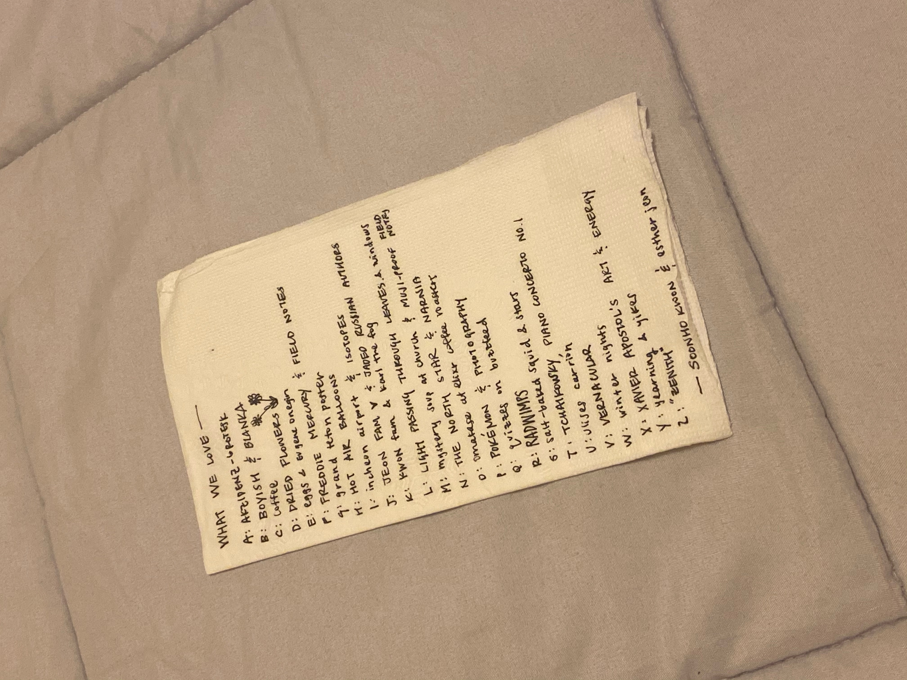

The Story
Esther and Soonho met at The University of Pennsylvania in Spring 2018.
Though Soonho doesn’t quite remember it...
Esther visited Pittsburgh once senior year started. And to this day, she claims
she just wanted to visit Pittsburgh. Soonho hardly believes that. She also made him a
mixtape. She was very into making mixtapes and using the risograph machine at the time.
On their first date, Esther had a really bad stomach ache so they just boxed up the food
they ordered. Soonho made some funny doodles about a turtle to make her feel better.
This trip proved to be a core memory! They started dating shortly after.
Esther and Soonho did long distance for most of their relationship! 3 years! They
finally moved to San Francisco in 2021 and have been there since.
